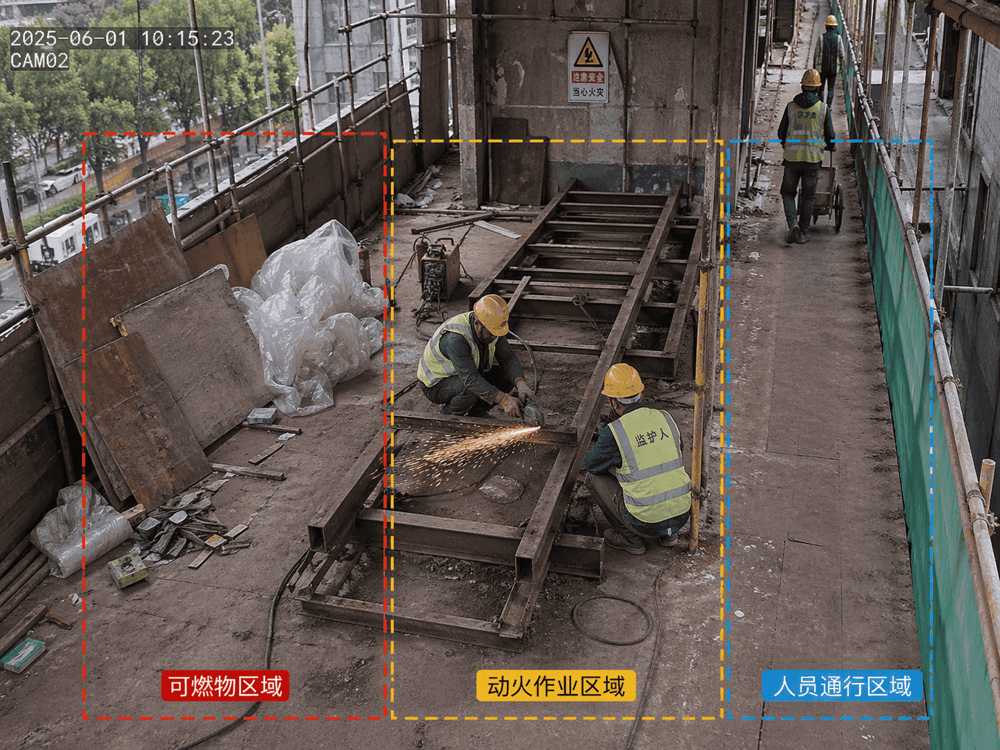
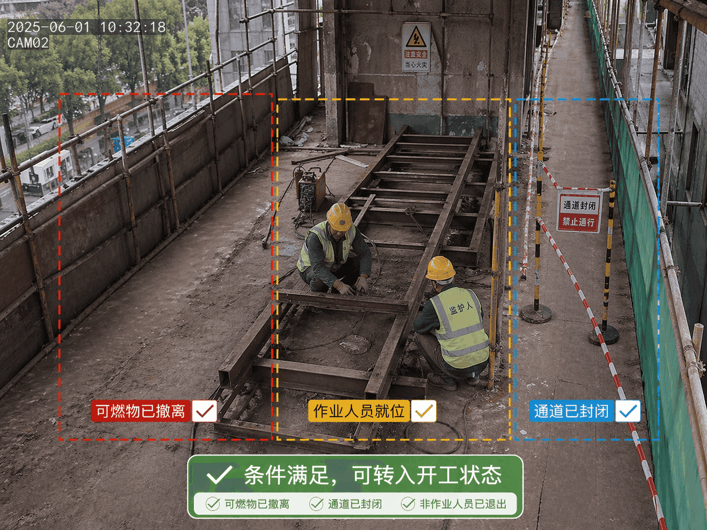
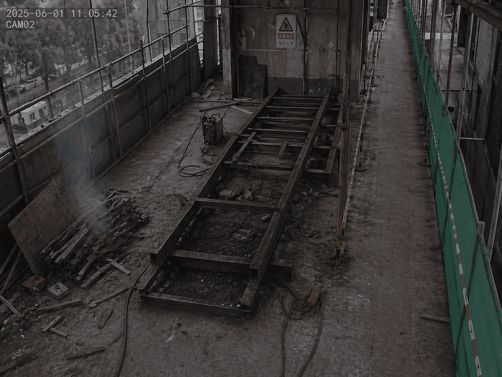
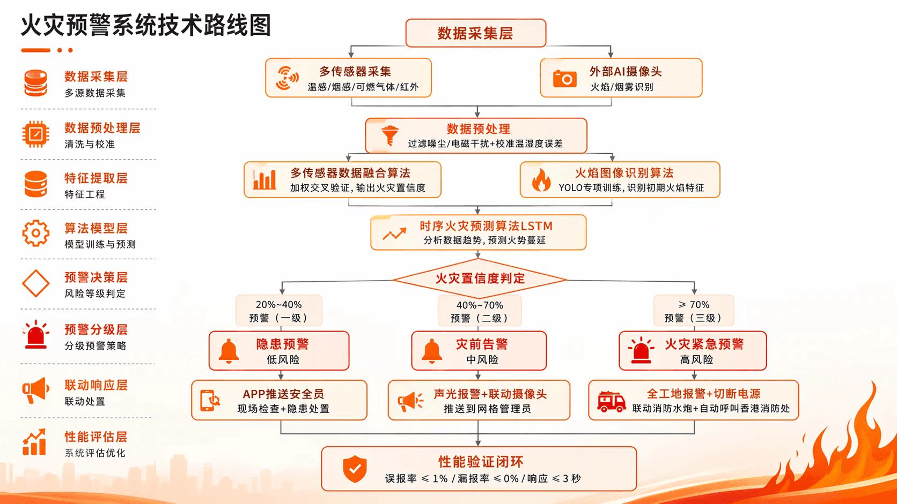
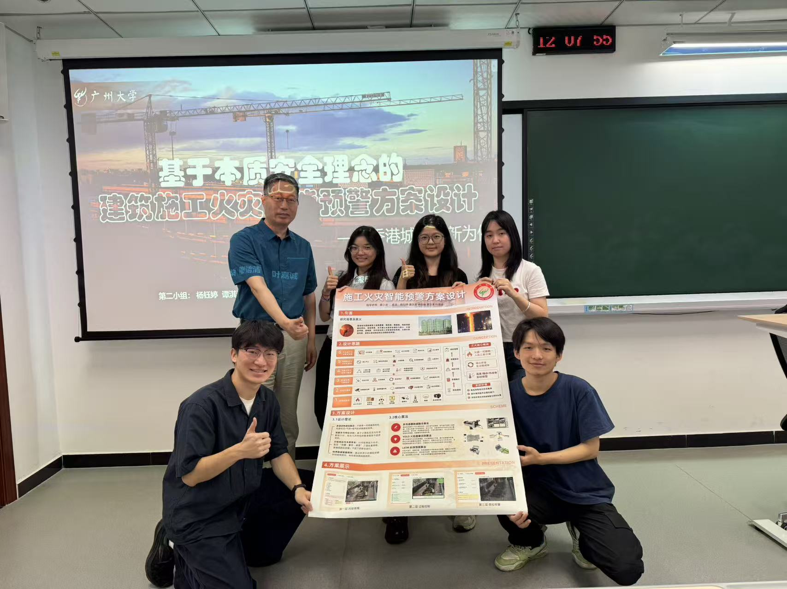

传统消防路径
- 火灾表征出现
- 探测器报警
- 人工确认和处置
- 事后复盘整改
Hong Kong Urban Renewal Fire Risk Control
面向香港城市更新施工场景的火灾风险预控 Demo
从宏福苑火灾暴露出的高密度施工风险出发，把消防预警从“发现火”前移到“阻止火”： 先识别致灾条件，再管控动火过程，最后用多源感知完成分级预警和闭环处置。
Why It Matters
城市更新项目往往处在高密度社区中，施工空间紧、动火作业多、可燃材料集中， 一旦火势扩散，救援通道和人员疏散都会面临压力。
RTHK 报道，宏福苑火灾死亡人数最终升至 168 人。
同一事件的调查仍在推进。RTHK 于 2026-03-20 报道，政府说明独立委员会仍在调查， 尚未得出结论。这个网页只将宏福苑作为风险背景，引出施工消防从被动响应转向主动预防的必要性。
Core Shift
传统预警多数识别烟、热、火焰等结果性信号；本质安全更关注火灾发生前的致灾条件。
System Architecture
这个 Demo 不是单个报警页面，而是一套从空间布置、作业流程到现场感知的防火管控逻辑。

AI 视觉识别动火区、可燃材料堆放区、人员通道和疏散通道，发现空间冲突后触发分级反馈。

将动火审批、安全检查、作业许可和实时监控串成流程，减少仅依赖人工经验的漏检风险。

融合温度、VFDS 视觉火焰侦测、ASD 吸气式烟感等信号，用 LSTM 判断风险演化并联动处置。
Interactive Demo
课程项目交互 Demo 使用模拟数据和 AI 辅助素材，重点展示系统设计理念、页面流程和风险联动方式。

Built With AI
这个网页会把“我用 AI 工具做出了系统 Demo”讲清楚，同时把技术能力翻译成外行能理解的安全价值。
完成系统 Demo 搭建、交互逻辑组织和前端页面实现，让方案从 PPT 走到可体验原型。
辅助生成系统部分图片和施工现场视觉素材，提升演示的场景真实感。
辅助生成系统部分视频画面，用动态方式呈现风险扫描和作业监控。
AI 看现场，传感器听异常，模型预测趋势，系统按风险等级自动提示、告警和调度。
Presentation Materials
把课程汇报海报和小组现场照片一起放在作品页后段，作为方案展示与团队协作记录。
完整呈现本质安全智能施工防火系统的背景、技术路线和预警方案。

点击放大记录课程汇报后的团队协作成果与指导交流瞬间。
Open Demo